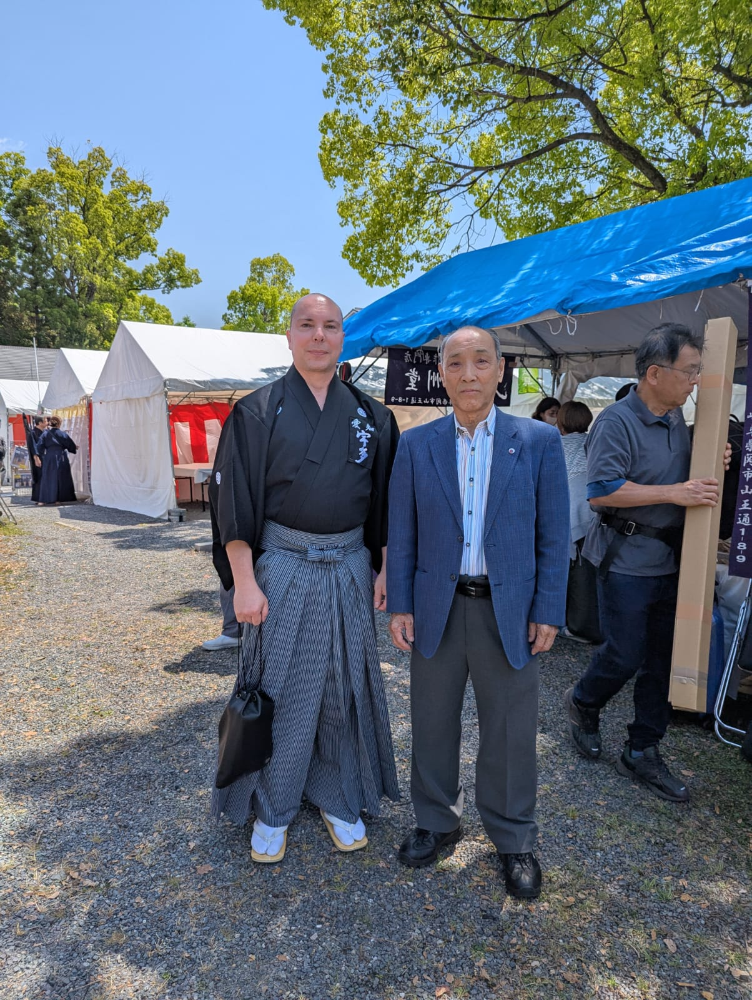
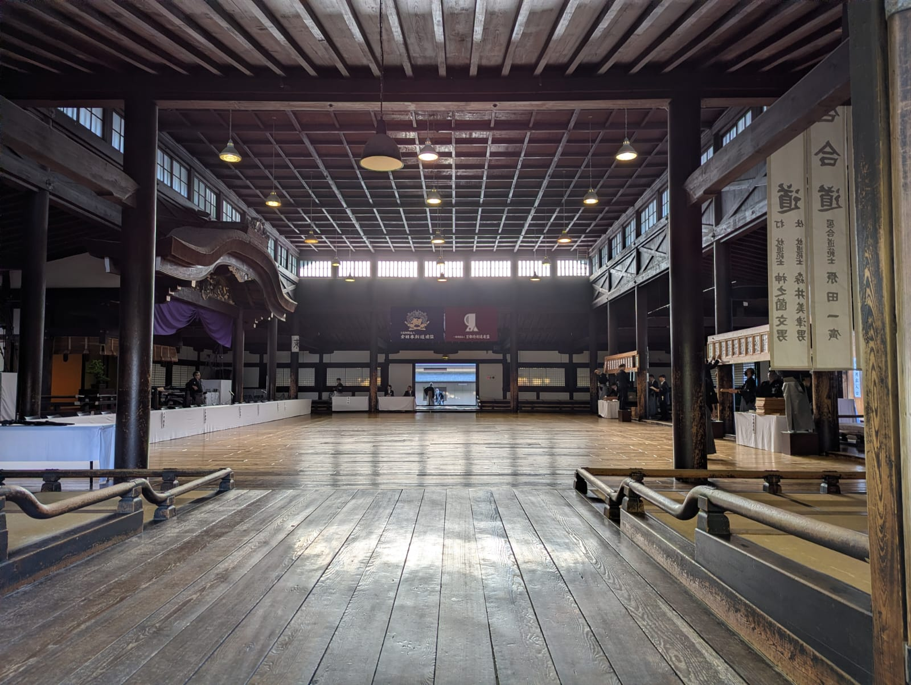
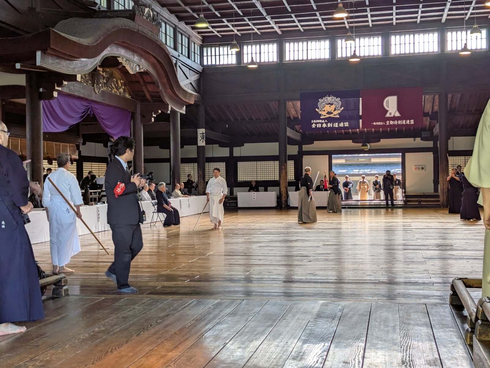
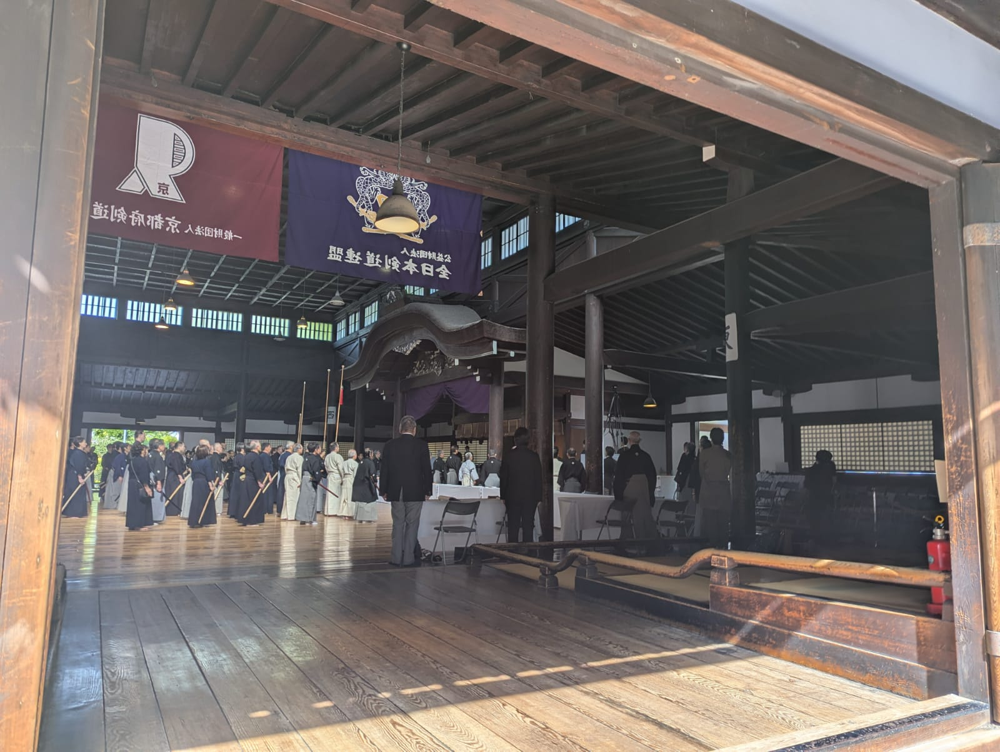
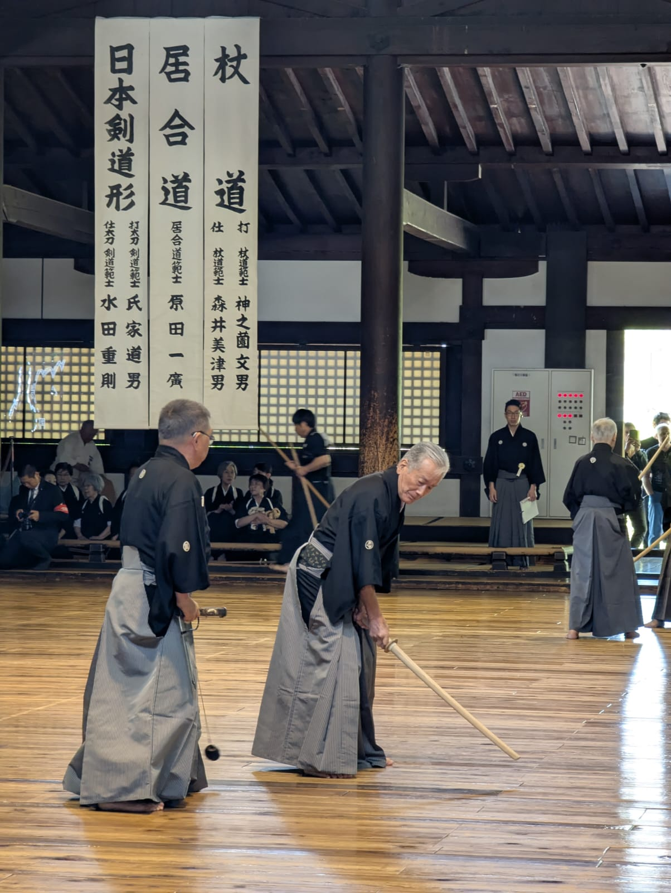
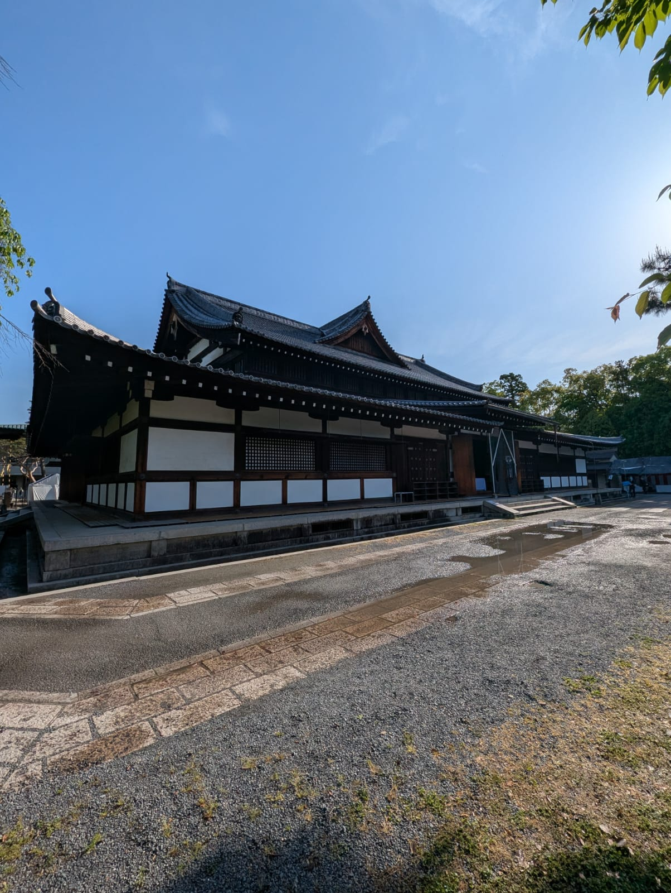
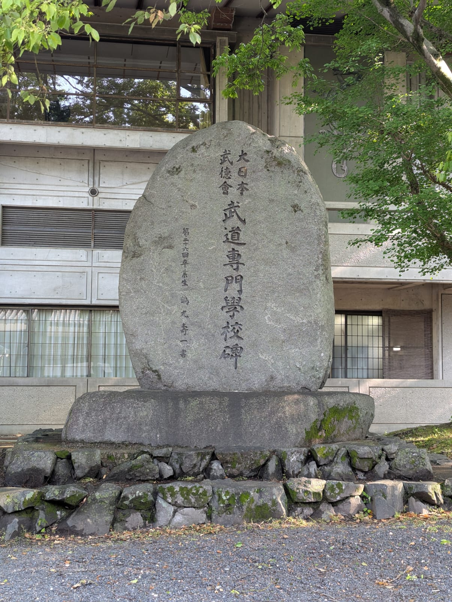
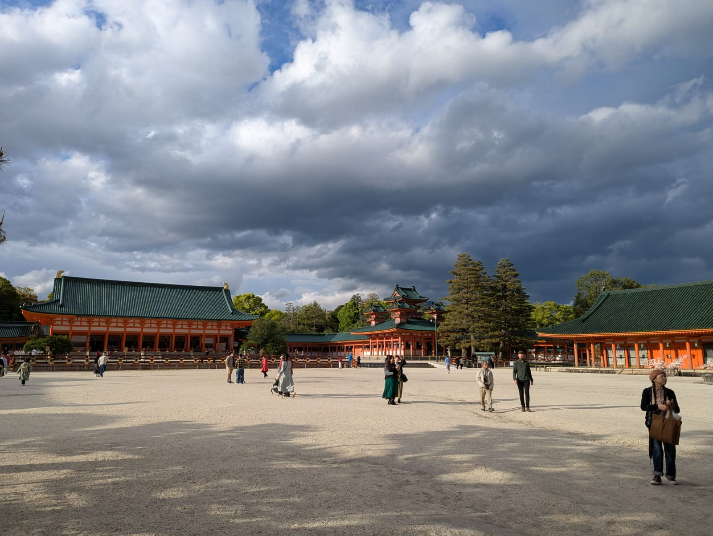
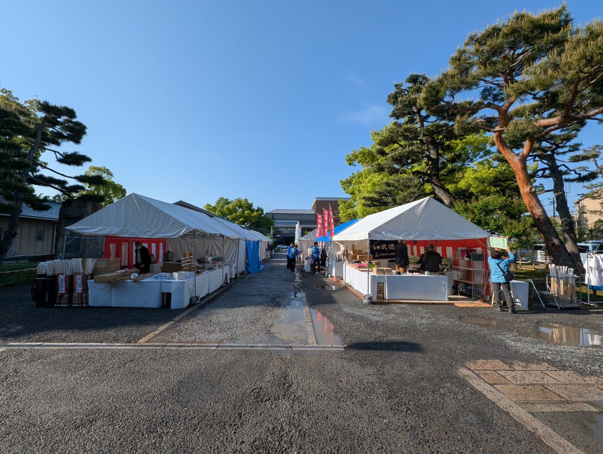
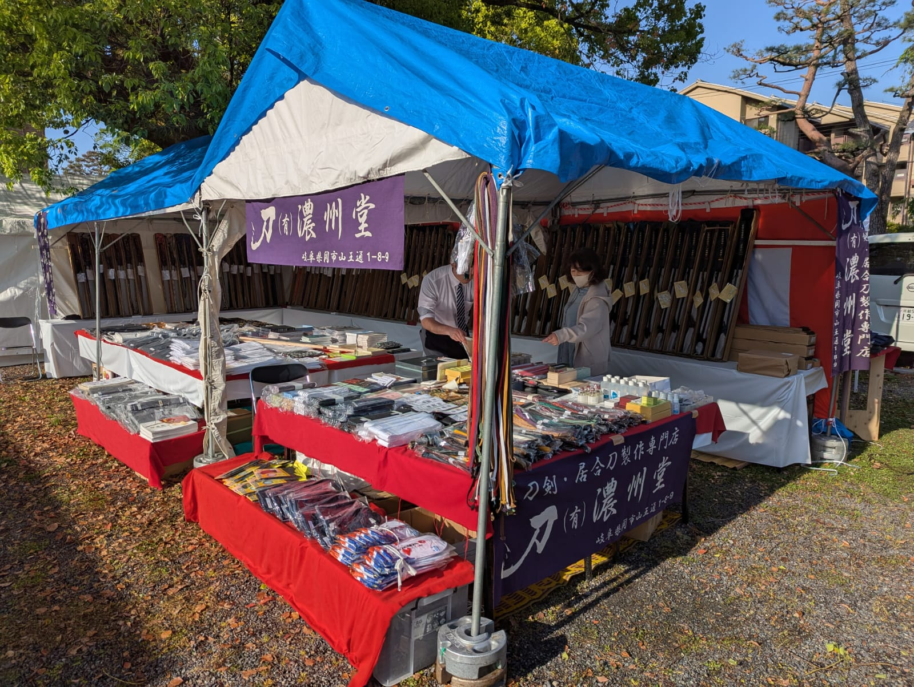

Notícias
Kyoto Taikai, 2026

Foto do interior do Butokuden, Kyoto.
07/05/2026
Alexandre Pereira Sensei, Renshi 7º Dan, e Oshita Masazaku Sensei, Kyoshi 8º Dan, participaram do Kyoto Taikai, realizado no Butokuden, em Kyoto. Respectivamente, se apresentaram nas categorias de 7º e 8º Dan. O Kyoto Taikai é o maior e mais prestigiado evento anual de artes marciais da Federação Japonesa de Kendo (AJKF). Vale ressaltar a participação de Alexandre Pereira Sensei como o primeiro 7º Dan da América Latina no Taikai. No evento, apresentaram Kata de Muso Jikiden Eishin Ryu e da Zen Nihon Kendo Renmei Iai. É uma grande honra participar deste Taikai, que reúne centenas de praticantes de alto nível (6º ao 8º Dan) para demonstrações de Koryu e realizações exames de Kendo, Iaido e Jodo.
Abaixo as apresentações do Alexandre Pereira Sensei, Renshi 7º Dan, e Oshita Masazaku Sensei, Kyoshi 8º Dan. Além de mais fotos:
Apresentação do Alexandre Pereira Sensei, Renshi 7º Dan.
Apresentação do Oshita Masazaku Sensei, Kyoshi 8º Dan.

Alexandre Pereira Sensei, Renshi 7º Dan, e Oshita Masazaku Sensei, Kyoshi 8º Dan, no Kyoto Taikai.

Foto do interior do Butokuden, Kyoto. Entrada Oeste.

Participantes aprensentando no Butokuden, Kyoto. Entrada Oeste.

Foto do interior do Butokuden, Kyoto. Entrada Leste.

Aprensentação de participantes do Kyoto Taikai.

Exterior do Butokuden, Kyoto.

Monumento em pedra do Butokuden, Kyoto.

Foto da area externa.

Lojas na area externa do evento.

Loja da Nosyudo na area externa do evento.
A Genbukan Brasil parabeniza ambos por sua participação no Kyoto Taikai. Assim como a todos os demais participantes.